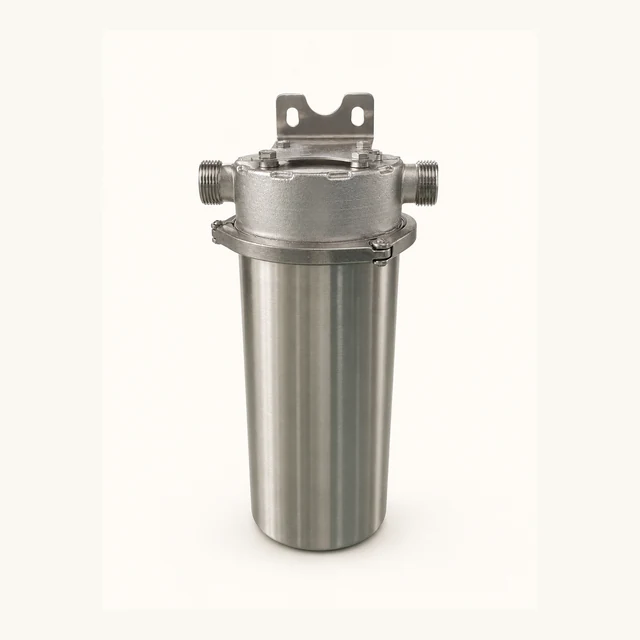

Boîtiers de filtre à eau pour cartouches de remplacement de 10 et 20 pouces — SUS 304
Envoyer une demandeBoîtiers de filtre à eau pour cartouches de remplacement de 10 et 20 pouces — SUS 304 — SUS: SUS 304; OEM: Optional pressure gauge.